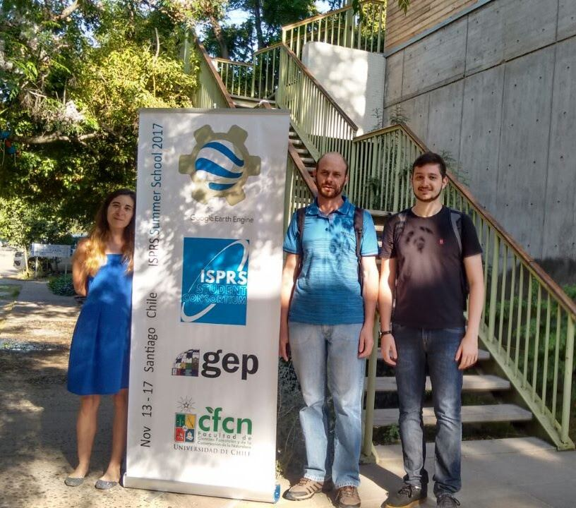
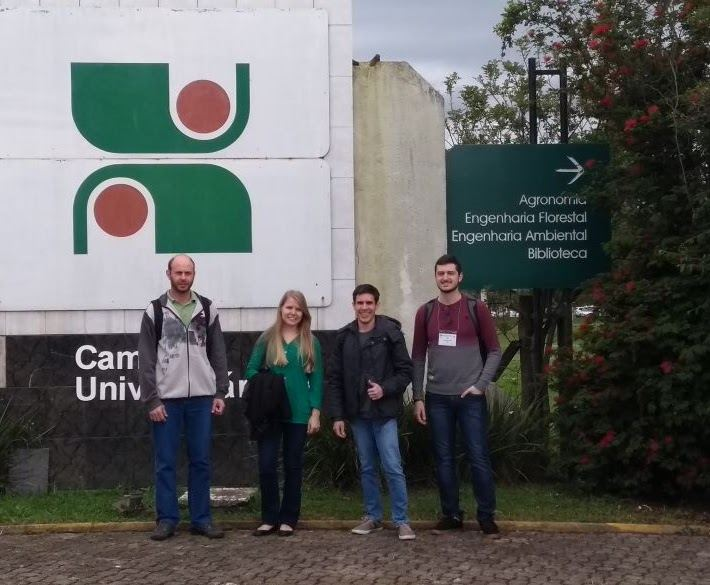
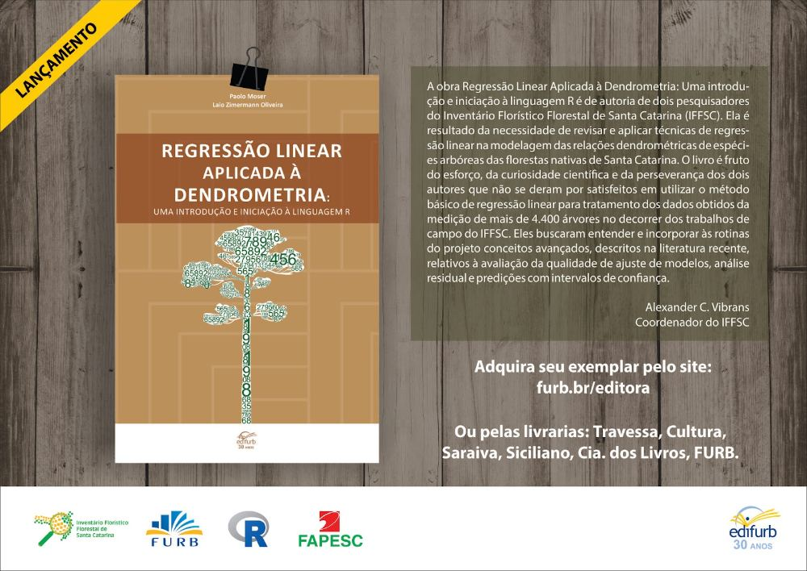

Terça, 14 Novembro 2017

Mais informações em:
Summer School sobre Google Earth Engine em Santiago, Chile
A oficina ISPRS Summer School 2017 em Santiago no Chile, que teve início do dia 13 e terminará no dia 17 de novembro, está focada no uso de algoritmos para classificação e detecção de mudanças no uso e cobertura do solo (LULC), usando o Google Earth Engine (GGE). Participam do evento integrantes do Projeto Monitoramento das Florestas em Santa Catarina (MonitoraSC), Adilson Luiz Nicoletti, Eva Sevillano Marco e Marcus Boeno.
O evento consiste em palestras, bem como sessões interativas moderadas pelo Dr. Nick Clinton (UC Berkeley, GEE developer relations team) e Dr. Jaime Hernández (Universidade do Chile).
A oficina esta organizada em três partes e colaborará nos trabalhos do MonitoraSC:
- Bases para mapeamento de LULC usando dados de Sensoriamento Remoto (SR) e apresentação do GEE.
- Técnicas de classificação de LULC e implementação em GEE.
- detecção de mudanças de LULC e implementação em GEE.
Sexta, 29 Setembro 2017

Participação em evento sobre Sensoriamento Remoto na UDESC, Lages
O YP&SS - IEEE/GRSS-Young Professionals & 16th ISPRS Working Group V/5 and Student Consortium Summer School 2017 (02/10 a 06/10/2017) é um evento conjunto organizado por universidades brasileiras com apoio e financiamento das sociedades científicas IEEE - Geoscience and Remote Sensing Society (GRSS) e da ISPRS - International Society for Photogrammetry and Remote Sensing.
Participam do evento integrantes do Projeto Monitoramento das Florestas em Santa Catarina (Adilson Luiz Nicoletti e Marcus Boeno) e mestrandos da FURB com dissertação sobre Sensoriamento Remoto (Aline Renata Klitzke e Murilo Schramm da Silva).
O evento é tradicionalmente realizado em vários países, tendo ocorrido pela primeira vez no Brasil em 2015, nas dependências do SIMEPAR/UFPR em Curitiba-PR. Já em 2016, este evento migrou para a UNESP/FCT - Campus de Presidente Prudente-SP. Em 2017, este mesmo evento será sediado em Lages-SC.
Devido aos grandes avanços na tecnologia de Perfilamento Laser (LiDAR), Google Earth Engine e Estatística Multivariada, muitas aplicações estão sendo desenvolvidas na área de Sensoriamento Remoto. Estas aplicações têm despertado grande interesse das comunidades científica e profissional. Considerando este contexto, o objetivo deste evento conjunto é mostrar as possibilidades técnicas e profissionais destas novas tecnologias visando dar subsídios a jovens profissionais e pesquisadores no direcionamento de suas carreiras.
O evento está organizado em dois blocos. O primeiro bloco, com duração de três dias, segue o modelo da Summer School da ISPRS. Tem como objetivo transmitir conhecimento técnico/científico sobre o tema selecionado. Neste bloco, as apresentações serão conduzidas na forma de palestras e seções interativas proferidas e moderadas por renomados pesquisadores e professores do Brasil e exterior. Até o presente momento, está confirmada o aceite do Prof. Dr. Norbert Pfeifer (Technische Universität Wien, Austria) que possui grande experiência técnica e científica no tema LiDAR e fotogrametria. Adicionalmente, temos o aceite do Prof. Dr. Anselmo Chaves Neto (Universidade Federal do Paraná - UFPR) que abordará os avanços da Estatística Multivariada Aplicada para o reconhecimento de padrões e automações.
O segundo bloco, com duração de dois dias, segue o modelo Young Professionals da IEEE/GRSS. O evento tem por objetivo orientar a carreira de jovens profissionais formados há até 10 anos e consta de palestras e seções interativas proferidas e moderadas por profissionais de destaque que militam em empresas, instituições de ensino/pesquisa e na academia. Até o presente momento, está confirmada o aceite do Prof. Héctor Jaime Hernández Palma (Universidad de Chile, Chile) que possui grande experiência técnica e científica na área de processamento digital de imagens usando Google Earth Engine e dados LiDAR.
Texto retirado de: http://www.cav.udesc.br/?id=1004
Publicação do livro Regressão Linear aplicada à dendrometria: uma introdução e iniciação ao R
Terça, 15 Agosto 2017

Participação no XVIII Simpósio Brasileiro de Sensoriamento Remoto
Segunda, 29 Maio 2017
Começou em Santos - SP no dia 28/05/2017 o XVIII Simpósio Brasileiro de Sensoriamento Remoto (http://www.dsr.inpe.br/sbsr2017/), que irá até o dia 31/05.
O Simpósio tem como objetivo congregar a comunidade técnico-científica e o usuário empresarial das áreas de Sensoriamento Remoto, Geotecnologias e de suas aplicações para a apresentação de trabalhos e debates sobre as pesquisas, desenvolvimento tecnológico, ensino e a política científica realizados no país e no mundo nos últimos dois anos. A organização geral do XVIII SBSR está a cargo do INPE e da SELPER Brasil.
O IFFSC está com 5 participantes no evento, Adilson Luiz Nicoletti, Daniel Augusto da Silva, Eva Sevillano Marco, Marcus Boeno e Murilo Schramm da Silva, que apresentam pôster, participam de cursos e discussões sobre o tema. Os participantes são Engenheiros Florestais pesquisadores, e estão envolvidos com o Projeto Monitoramento das Florestas em Santa Catarina, integrado ao IFFSC em Setembro desse ano, com intuito de monitorar e mapear a cobertura de uso da Terra no estado.
O interesse, sobretudo, é agregar ao Projeto Monitoramento o conhecimento sobre novas tecnologias, ferramentas e metodologias em Sensoriamento Remoto, além de ampliar contatos técnico-científicos e divulgar os resultados obtidos até agora.
Acompanhe também nossas redes sociais para ficar por dentro das ações do projeto.
FlorestaSC
florestasc@furb.br 47 3221-6100
Página migrada de floresta.sc.gov.br.